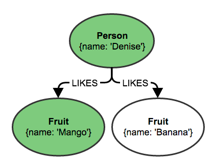
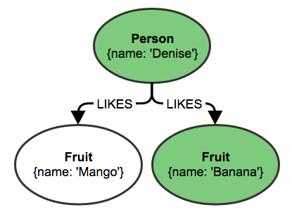

lead text
This course provides an overview on everything that you need to build a Neo4j application with the Ruby programming language. Ruby on Rails is used, but any Ruby framework (or lack thereof) could also be used.
You should have Ruby installed on your system. Some experience with Ruby and/or Rails is suggested.
The Goal
Let’s say you would like to write a web application to track entities for yourself or your organization. Being a good DRY programmer you might decide that what you want is an asset portal: an application which gives you an GUI for browsing and editing entities while also making it easy to define new assets. This guide will show you how you might start creating such an application using Ruby on Rails and Neo4j.
Why Neo4j?
Neo4j is the world’s most popular graph database. This offers a number of advantages:
- Neo4j provides a schemaless representation of both entities and relationships between entities.
- Relationships between entities are traversed rather than joined. Traversals explore the local subgraph meaning that query times stay the same as your database grows.
- Because of the traversal paradigm we think in terms of the complex relationships in our data without worrying as much how to model it
Rubyists generally prefer tools which are developer friendly and which don’t bother you with details until it’s neccessary. Neo4j makes it easy to create nodes and relationships in whatever way seems most natural, but you can also change the structure of your database with a query.
Introduction to Neo4j
Connected information is everywhere in our world. Neo4j was built to efficiently store, handle, and query highly connected elements in your data model. With a powerful and flexible data model you can represent your real-world, variably structured information without a loss of fidelity. The property graph model is easy to understand and handle, especially for object oriented and relational developers.

The property graph model consists of:
Nodes which have:
- properties: schemaless key/value pairs
- labels: describe and group nodes much like tables group rows, but nodes can have multiple labels
Relationships which connect two nodes directionally have:
- properties: schemaless key/value pairs
- A type: gives a description of how it connects the two nodes
While relationships are directional, querying relationships in either direction has no associated performance cost.
Cypher
Cypher is Neo4j’s built-in query language. Cypher queries look like:
MATCH (p:Person)-[:LIKES]->(f:Fruit)
RETURN p, f.nameThe MATCH clause is the most common starting point for Cypher queries. It defines a pattern for which to search and returns one result per match. For example we might get the following two matches:
 
With the RETURN clause we would end up returning a table such as:
| p | f.name |
|---|---|
{name: "Denise"} |
"Mango" |
{name: "Denise"} |
"Banana" |
Here you see we can return entire entities in our database rather than just properties. This might be returned as a Hash in Ruby, though by default in the Neo4j.rb gems these are wrapped in an object.
This is very handy, but it would also be nice to avoid the duplication of our Person node. You can perform the same match but instead use the collect function to aggregate the values:
MATCH (p:Person)-[:LIKES]->(f:Fruit)
RETURN p, collect(f.name)| p | f.name |
|---|---|
{name: "Denise"} |
["Mango", "Banana"] |
While it’s possible to get started using the Neo4j.rb without learning Cypher, it is a very powerful way to query a Neo4j database and is worth learning. Also since the Neo4j.rb project works by making Cypher queries to Neo4j it is good to understand Cypher as your queries get more complex. There is a Cypher tutorial if you would like to learn more.
Neo4j in Ruby
For this guide we will be using the Neo4j.rb project. The project consists of the following gems:
- neo4j A Object-Graph-Mapper (OGM) for the Neo4j graph database. It tries to follow API conventions established by ActiveRecord but with a Neo4j flavor.
- neo4j-core A low level driver for connecting to Neo4j. Used by the neo4j gem.
- neo4j-rake_tasks A set of rake tasks for installing and managing a Neo4j database within your project. Used by the neo4j-core gem.
Specifically in this guide we will be using the ActiveNode and ActiveRel modules from the neo4j gem to model nodes and relationships from our database.
Setup
Here we describe how to create a fresh Rails application with Neo4j as the database. If you have an existing Rails application you can refer to the Neo4j.rb documentation.
Here is how you would setup your asset portal Rails app:
rails new asset_portal -m http://neo4jrb.io/neo4j/neo4j.rb -O
cd asset_portal
rake neo4j:install[community-latest]
rake neo4j:startWhat do these commands do?
The first creates a new Rails app skipping ActiveRecord (the -O flag) and setting up Neo4j.rb in your project (the -m flag). Then we change into our directory and install the latest version of the community edition of Neo4j into our app directory (into db/neo4j/development/). Last we start up our copy of Neo4j.
Next you should open up your config/application.rb file and find the config.neo4j. lines. Here you have a choice between *embedded and server modes:
- Server mode allows you to connect to Neo4j via it’s HTTP JSON APIs.
- Embedded mode requires JRuby and allows you to run Neo4j as part of your JRuby process. This gives you access to the Neo4j Java APIs directly.
By default you will be configured to Neo4j in server mode on the default port (7474). If you would like something other than the default console the documentation.
|
Warning
|
By default the rake neo4j:install command disables Neo4j’s authentication. It is suggested that you enable the authentication for any exposed Neo4j instances.
|
In this guide we’ll be setting up different ActiveNode models which will serve as assets. This is a textbook example of where we can use class inheritance in Neo4j.rb. First we create some basic models:
rails generate scaffold User name:string email:string
rails generate scaffold Category name:string
rails generate scaffold Asset title:stringThis will generate scaffolds just like any Rails application with the exception that the models will be ActiveNode models rather than ActiveRecord models and will look like this:
class User
include Neo4j::ActiveNode
property :name, type: String
property :email, type: String
endSince Neo4j is schemaless we need to define our properties in our model.
|
Note
|
By default there will be a uuid property created on our model. If you would like to define your own unique identifier you can use the id_property method. Either can be accessed or changed via the #id and #id= methods.
|
Once we’ve set up those models we can define our asset models like so:
rails generate scaffold Book isbn:string title:string year_published:integer author:references category:referencesThat should generate a model which looks like this:
class Book
include Neo4j::ActiveNode
property :isbn, type: String
property :title, type: String
property :year_published, type: Integer
has_one :in_or_out_or_both, :author, type: :FILL_IN_RELATIONSHIP_TYPE_HERE
has_one :in_or_out_or_both, :category, type: :FILL_IN_RELATIONSHIP_TYPE_HERE
endYou should change that to look like the following (note the Asset superclass definition):
class Book < Asset
id_property :isbn
property :year_published, type: Integer
has_one :in, :author, type: :CREATED, model_class: :User
has_one :out, :category, type: :HAS_CATEGORY
end|
Note
|
You can remove the title property because it is inherited from the Asset model.
|
|
Note
|
We need to specify our Neo4j relationship directions and types here. Additionally since author isn’t enough for ActiveNode to understand that we want to reference users, we specify a model_class option.
|
By inheriting from Asset our Book model will create nodes with two labels (Book and Asset). Likewise when you query for nodes via the Book model it will only find nodes which have both labels.
Lastly we just need to make a couple of small fixes. Change these lines to get the names of book authors and categories:
<td><%= book.author.try(:name) %></td>
<td><%= book.category.try(:name) %></td>And change these lines to be able to choose the author when creating or editing books:
<div class="field">
<%= f.label :author %><br>
<%= f.select :author, options_from_collection_for_select(User.all, :id, :name, @book.author.try(:id)), include_blank: true %>
</div>
<div class="field">
<%= f.label :category %><br>
<%= f.select :category, options_from_collection_for_select(Category.order(:name), :id, :name, @book.category.try(:id)), include_blank: true %>
</div>And so that you can set your associations, change the book_params method in the BooksController to remove the _id:
def book_params
params.require(:book).permit(:isbn, :title, :year_published, :author, :category)
endNow that we’ve created our scaffolding let’s start up our Rails server:
rails s
open http://localhost:3000/booksFrom there you can create, update, browse, and delete books via the scaffolding. You can visit /books, /users, and /categories to get entry points into the various sections.
The Fun Stuff
If you just wanted to do simple CRUD operations there are plenty of other databases to choose from. How can we do something a bit more fun using the power of Neo4j?
Eager Loading
First let’s introduce a performance improvement which isn’t available from ActiveRecord. When you go to your list of books you should see something like this in your log:
Started GET "/books" for ::1 at 2015-09-30 17:34:03 +1300
Processing by BooksController#index as HTML
CYPHER 4ms MATCH (n:`Book`:`Asset`) RETURN n
Book#author 4ms MATCH (previous:`Book`:`Asset`) WHERE (ID(previous) IN {ID_previous}) OPTIONAL MATCH previous<-[rel1:`CREATED`]-(next:`User`) RETURN ID(previous), collect(next) | {:ID_previous=>[2, 5, 9, 10]}
Book#category 3ms MATCH (previous:`Book`:`Asset`) WHERE (ID(previous) IN {ID_previous}) OPTIONAL MATCH previous<-[rel1:`HAS_CATEGORY`]-(next:`Category`) RETURN ID(previous), collect(next) | {:ID_previous=>[2, 5, 9, 10]}
Rendered books/index.html.erb within layouts/application (17.1ms)
Completed 200 OK in 110ms (Views: 109.2ms)If you find that a bit hard to read then you can add the following line to your application’s configuration:
config.neo4j.pretty_logged_cypher_queries = trueDon’t forget to restart your Rails server!
Once you done this your log will look more like this:
Started GET "/books" for ::1 at 2015-09-30 17:37:34 +1300
Processing by BooksController#index as HTML
CYPHER 9ms
MATCH (n:`Book`:`Asset`)
RETURN n
Book#author 5ms
MATCH (previous:`Book`:`Asset`)
WHERE (ID(previous) IN {ID_previous})
OPTIONAL MATCH previous<-[rel1:`CREATED`]-(next:`User`)
RETURN
ID(previous),
collect(next) | {:ID_previous=>[2, 5, 9, 10]}
Book#category 4ms
MATCH (previous:`Book`:`Asset`)
WHERE (ID(previous) IN {ID_previous})
OPTIONAL MATCH previous<-[rel1:`HAS_CATEGORY`]-(next:`Category`)
RETURN
ID(previous),
collect(next) | {:ID_previous=>[2, 5, 9, 10]}
Rendered books/index.html.erb within layouts/application (24.2ms)
Completed 200 OK in 147ms (Views: 146.0ms)First the books are loaded and then separate queries are made to get all of the authors and categories for those books.
With ActiveRecord you would need to specify an includes in order to make this happen rather than having each entity loaded individually.
ActiveNode, on the other hand, makes the assumption that if you refer to an association from a list of items, you’re almost certainly going to want that association for all of the objects.
But we can do better! Now modify the index action of the BooksController like so:
def index
@books = Book.all.with_associations(:author, :category)
endThe with_associations method is similar to includes, except that our associations are loaded in the same query using the collect function demonstrated earlier.
Started GET "/books" for ::1 at 2015-09-30 17:54:25 +1300
Processing by BooksController#index as HTML
CYPHER 9ms
MATCH (n:`Book`:`Asset`)
OPTIONAL MATCH
n<-[:`CREATED`]-author,
n<-[:`HAS_CATEGORY`]-category
WHERE
(author:User) AND
(category:Category)
RETURN
n,
[collect(author),collect(category)]
Rendered books/index.html.erb within layouts/application (12.0ms)
Completed 200 OK in 62ms (Views: 61.5ms)What we get is a list of Book objects which are pre-populated with authors and categories.
Recommendations
You may have heard that Neo4j makes building recommendations from your data easy. Let’s take a look at how we might make some recommendations. For this we’re going to introduce has_many associations.
First change the category association for the Book model:
has_many :out, :categories, type: :HAS_CATEGORYThen add a books association to the Category model:
has_many :in, :books, origin: :categoriesOnce we’ve changed the has_one to has_many for the book categories we should update our scaffold UI to match:
def index
@books = Book.all.with_associations(:author, :categories)
end
... Further down ...
def book_params
params.require(:book).permit(:isbn, :title, :year_published, :author, :category_ids => [])
end<th>Categories</th>
... Further down ...
<td>
<ul>
<% book.categories.each do |category| %>
<li><%= link_to category.name, category %></li>
<% end %>
</ul>
</td><div class="field">
<%= f.label :categories %><br>
<%= f.select :category_ids, options_from_collection_for_select(Category.order(:name), :id, :name, @book.categories.map(&:id)), {include_blank: true}, {multiple: true, size: 5} %>
</div><p>
<strong>Categories:</strong>
<%= @book.categories.to_a %>
</p>Whew!
Now with the ability for a book to have many categories and for a category to have many books week can have a much better picture about recommending books
It is simple to get a start on querying potential recommendations. Try running this bit of Ruby code in your Rails console:
Book.all.categories.books.to_aIt should show you the query which was made and it should look something like:
MATCH (n:`Book`:`Asset`)
MATCH n-[rel1:`HAS_CATEGORY`]->(node3:`Category`)
MATCH node3<-[rel2:`HAS_CATEGORY`]-(result_books:`Book`:`Asset`)
RETURN result_booksThis query is finding all of the books that share categories with all other books. This isn’t particularly useful until we start introducing some variables. What if you wanted to list every book and find out, for every other book with which it shares a category, how many categories it shares?
Book.as(:book).categories(:category).books(:other_book).pluck('book', 'other_book', 'count(category)')Notice how we’re starting to assign variables. These eventually become the variables in the cypher query made to Neo4j.
Taking it a step further, let’s create a query which finds, for all books, the books which share at least two categories:
@recommendations = Book.as(:book).
categories(:category).
books(:other_book).
where('book <> other_book').
query.
with('book, other_book, count(category) AS count').
where('count > 1').
pluck('book.isbn', 'collect(other_book)')
@recommendations = Hash[*@recommendations.flatten(1)]<th>Recommendations</th>
... Further down ...
<td><%= (@recommendations[book.isbn] || []).map(&:title).to_sentence %></td>Of course we don’t want to put too much logic in the controller, so let’s extract this to a model class method:
Book.recommendationsdef self.recommendations
recommendations = all(:book).
categories(:category).
books(:other_book).
where('book <> other_book').
query.
with('book, other_book, count(category) AS count').
where('count > 1').
pluck('book.isbn', 'collect(other_book)')
Hash[*recommendations.flatten(1)]
endBecause the all method starts it off we can actually add this to an existing chain rather than just calling it on the Book model:
Book.recent.recommendationsUnimplemented ideas:
- Guide should demonstrate creating a rails app to track assets (which could be any sort of entity)
- Use branch of asset portal app to describe simple app
- In the guide, point to engine gem as the latest part of this project as well as sample application
-
Options
- Switching entirely to Neo4j
- Using Neo4j and another database for separate entities
- Using Neo4j to replicate some or all of an existing database
- Doesn’t matter too much as the neo4j.rb gems don’t conflict with other object mappers
-
Usage
-
Cool things that you can do:
- Realize that you need to add a node / relationship (just add it to the models)
- Connected data query
-
Cool things that you can do: